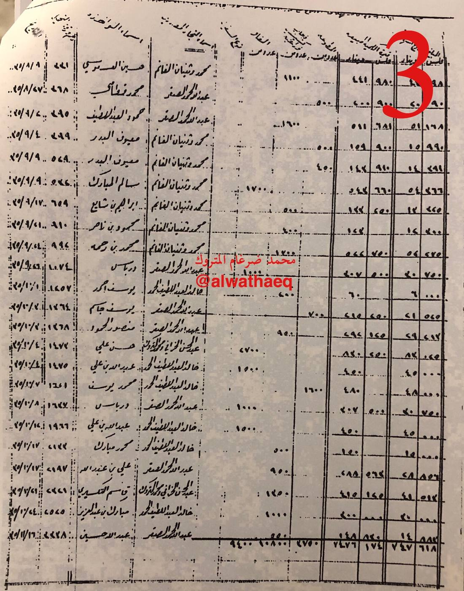

١٩١٣ و١٩٣٣ · دفتر عام ١٩١٣ لمحمد بن عبدالله المتروك، وقائمة عام ١٩٣٣ بالتجار المصدرين للتمور من العراق
محمد قطامي، التاجر البحري والنوخذة
ما هي
يرد اسم محمد قطامي في حساب عام ١٩١٣. وفي عام ١٩٣٣ يرد أول سبعة نواخذة يبحرون للتاجر عبدالله الحمد الصقر، في سجل رسوم التمور المصدرة من العراق.
أهميتها
محمد عبدالعزيز القطامي في البحر نوخذة قبل وفاته في مارس ١٩٣٩ بنحو ست سنوات.
من المقصود
أكدت العائلة أن محمد عبدالعزيز، أخا جاسم ووالد آمنة، كان تاجرا بحريا ونوخذة.
صور الصفحات


النص الأصلي
ملاحظات
مقتطفات مطبوعة كما نشرها موقع الوثائق. وكان الشباب يتولون أدوار الكبار مبكرا في ذلك الوقت، فقد قاد ناصر عبدالوهاب القطامي طاقم سفينته في الثالثة عشرة.
أسماء أخرى
المصادر
موقع الوثائق (alwathaeq.com): دفاتر ورسائل التاجر الكويتي محمد بن عبدالله المتروك، مع شرح وتعليق محمد ضرغام المتروك. الصور كما نشرها موقع الوثائق.
مرجع الأرشيف
- Date exporters, 1933 · 1933
- Document 133, book 12 · 1913
كيف كُتب هذا النص: المقتطفات العربية كما نشرها موقع الوثائق. الترجمة الإنجليزية من Claude، يرجى مراجعتها.
افتح في الموقع التفاعلي